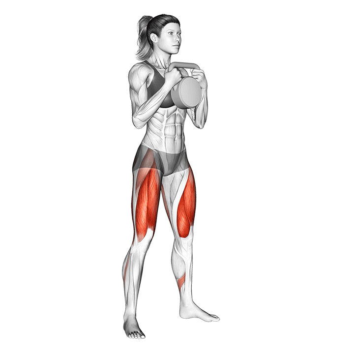
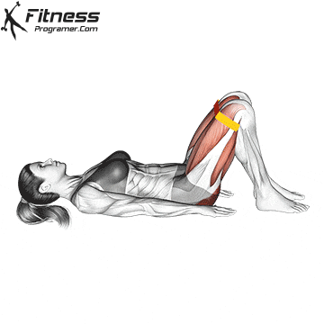
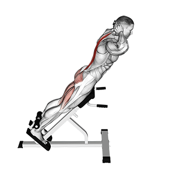
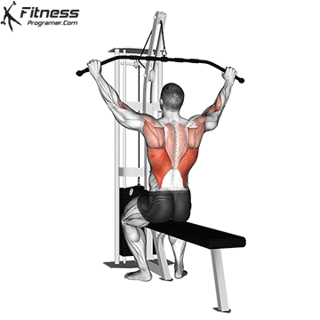
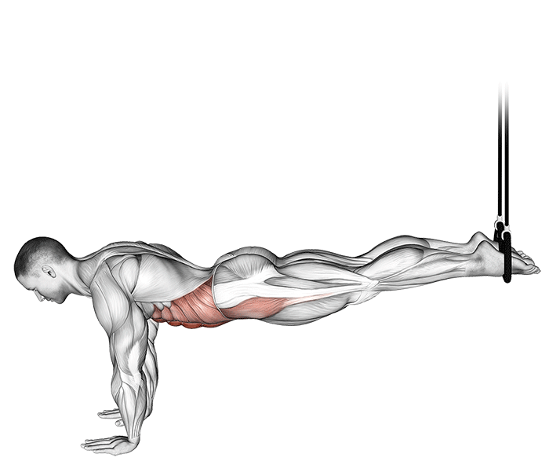
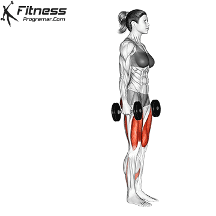
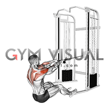

02 — Phase 1 · Foundation
Weeks 1 – 4: build the patterns
20 May – 16 June 2026 · 3 RT sessions + 2 walks per week
Phase 1 is about earning the right to lift heavy in Phase 2. The aim — movement quality first, base hypertrophy second, fitness third. All sessions use double progression: start at the lower end of the rep range, add one rep per session until you hit the top of the range, then increase load 2.5 – 5 kg and reset. Compounds run 6 – 10 reps for mechanical tension; accessories run 10 – 15 reps for metabolic stress. Your two PT sessions land on the heaviest training days.
Weekly structure
Mon
Full-Body A
PT 1
Tue
Zone 2 Walk · 45 – 60 min
Wed
Full-Body B
Thu
Rest · or 30 min easy walk
Fri
Full-Body C
PT 2
Sat
Long Walk · 60 – 90 min
Sun
Full Rest

Goblet Squat — image pending'">01 · Compound
Goblet Squat
3 × 6 – 10DB held at chest
Build the squat pattern before loading the bar. Focus on depth — hip crease below knee — and a tall brace. Drive through mid-foot, not toes.
02 · Compound
Deficit Single Leg Deadlift (Kettlebell)
3 × 6 – 8 each legLight KBBox or bench ~50 cmHold support with free hand
Stand on a box or sturdy bench around 50 cm high. Use your free hand to hold a fixed support — rack post, cable column, or wall — for balance; this is a loaded stretch drill, not a stability test. Hold the KB in the hand opposite the working leg. Hinge at the hip, push the hips back, and let the KB travel straight down as far as it can go below foot level. Because the platform is high, the drop is significant — your glute and hamstring will be pulled into a deep, full-range stretch that a floor-based RDL simply cannot reach. Keep the back flat throughout; the depth comes from hip hinge, not spinal rounding. Pause 1–2 seconds at the bottom — breathe into the stretch — then drive through the heel and squeeze the glute hard to return to standing. Go very light. The range of motion is the stimulus, not the weight.

03 · Compound
Single-Arm Dumbbell Row
3 × 6 – 10 each
Drive elbow back to the hip, not up to the shoulder. Squeeze the shoulder blade at the top. Keep spine neutral — no twisting.

Glute Bridge — image pending'">04 · Accessory
Glute Bridge
3 × 10 – 15Bodyweight or single DB
Push the floor away with heels. Tuck the pelvis at the top — do not arch lower back. Squeeze for one full second at peak.

05 · Core (anti-extension)
Dead Bug
3 × 8 each side
Lower back glued to the floor — non-negotiable. Opposite arm and leg lower slowly; return under control. If your back arches, reduce range.

06 · Core (anti-lateral-flexion)
Side Plank
3 × 20 – 30 sec each
Start on knees if needed — build to full plank. Hip lifted high, body in a straight line from head to base. Breathe normally.

Back Extension — image pending'">07 · Accessory · Posterior Chain
Back Extension (45° Hyperextension Bench)
3 × 10 – 15Bodyweight or light plateFull ROM
Go lower than the pad angle suggests. Let your torso descend well past 45° — aim for near-vertical — until you feel a deep stretch in the glutes and hamstrings. Training the muscle in this lengthened position drives more hypertrophy than stopping halfway. Control the descent over 3 seconds.
At the top, go slightly past neutral and squeeze the glutes hard. This is hip hyperextension — not spinal hyperextension. The movement comes entirely from the hips: think of pushing your hips forward and tucking your pelvis. The glutes are powerful hip extensors, and those final degrees of extension are exactly where they fire hardest. Hold the squeeze for 1–2 seconds before lowering. You should feel it entirely in your glutes, not your lower back.
At the top, go slightly past neutral and squeeze the glutes hard. This is hip hyperextension — not spinal hyperextension. The movement comes entirely from the hips: think of pushing your hips forward and tucking your pelvis. The glutes are powerful hip extensors, and those final degrees of extension are exactly where they fire hardest. Hold the squeeze for 1–2 seconds before lowering. You should feel it entirely in your glutes, not your lower back.

Lat Pulldown — image pending'">01 · Compound
Lat Pulldown (or Assisted Pull-up)
3 × 6 – 10
Pull the bar to upper chest, elbows driving down — not back. Lean torso slightly back, squeeze shoulder blades together at the bottom.

02 · Compound
Dumbbell Bench Press (Flat)
3 × 6 – 10
Lower DBs to outer-chest level, elbows at ~45° from the body. Drive up and slightly together at the top without locking out.

03 · Compound
Dumbbell Shoulder Press (Seated)
3 × 6 – 10
Press straight up — wrists stacked over elbows. Don't arch the lower back; brace the core. Lower under control to ear level.

04 · Accessory
Chest-Supported Cable Row
3 × 10 – 15
Chest stays on the pad — that's the point. Pull handles to ribs, squeeze blades together, two-second pause at the back.

TRX Ab Crunch — image pending'">05 · Core (flexion)
TRX Ab Crunch
3 × 10 – 15Feet in TRX handles
Start in a plank — hands under shoulders, body in a straight line, feet suspended in the TRX handles. Drive both knees toward your chest in a controlled crunch, flexing at the hip and spine. Pause briefly at the top, then extend slowly back to plank. Keep the hips level throughout — do not let them pike up or sag down. The slower the return, the more the abs work.

06 · Core (anti-rotation)
Pallof Press
3 × 10 each side
Stand side-on to cable, press handle straight out, resist the rotation. Two-second hold, return under control. Lumbar-safe.

01 · Compound
Barbell Hip Thrust (or DB)
3 × 6 – 10
Upper back on bench, feet hip-width, chin tucked. Drive through heels, fully extend hips, squeeze glutes hard at the top — one second hold.

Reverse Lunge — image pending'">02 · Compound
Reverse Lunge (DB)
3 × 6 – 10 each leg
Step backward, drop the back knee to just above the floor. Front shin stays vertical. Drive through the front heel to stand up.
03 · Accessory · Glute Medius
Cable Hip Abduction
3 × 10 – 15 each legCable at ankle height
Attach the ankle cuff to the low cable pulley. Stand side-on to the machine, slight forward lean at the hip for balance. Keeping the leg straight, sweep it away from the body to about 45° — no hip hiking or torso leaning. Control the return slowly; resist the cable pulling the leg back in. This targets the glute medius, which shapes the side of the glute and stabilises the pelvis when you walk, run, and squat.

Seated Face Pull — image pending'">04 · Accessory · Rear Delt & Posture
Seated Face Pull (Cable)
3 × 10 – 15Seated on bench or floorRope attachment
Sit facing the cable stack with the pulley set at or just above head height. Pull the rope toward your face — elbows drive high and wide, hands finishing beside your ears. Sitting eliminates lower-body momentum, so your rear delts and upper back do all the work. Squeeze the shoulder blades together at the end of each rep and hold for one second. Your back and posture insurance policy.

05 · Accessory
Dumbbell Bicep Curl
2 × 10 – 15
Elbows pinned to the ribs — no swinging. Slow on the way down. Full extension at the bottom or you cheat the stretch.

06 · Accessory
Tricep Cable Pushdown
2 × 10 – 15
Elbows locked at sides — they don't move. Press the rope down and slightly apart at the bottom. Squeeze for one second.
Double progression — how it works. Each exercise has a rep range, not a fixed number. Session one: start at the bottom of the range (e.g. 6 reps for a compound). Next session: aim for one more rep at the same weight (7). Keep adding reps session to session. When you hit the top of the range (e.g. 10) on all three sets with 2 reps still in reserve — increase the load by 2.5 – 5 kg and reset back to the bottom of the range. Every week you should be adding at least one rep somewhere. If you are not, the load is too high or your recovery needs attention. This creates a weekly overload signal, not a monthly one, which is what the timeframe demands.